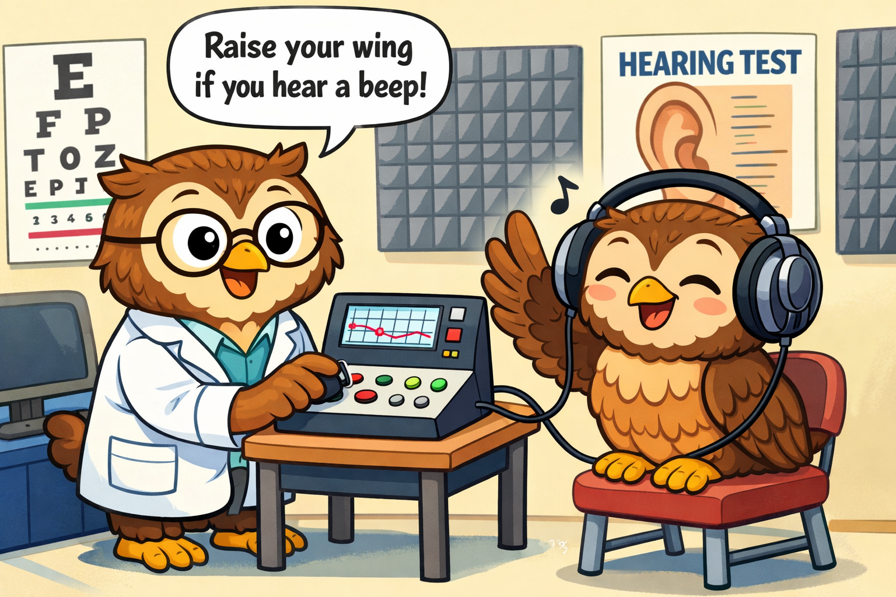

Speech Perception in Complex Environments
How competing talkers, background noise, acoustic cues, and audibility influence the ability to recognize, attend to, and understand speech.
We investigate how auditory processing, cognition, and acoustic context shape speech understanding and listening function in daily life, with a focus on the listening experiences of autistic adults.
Our work examines why speech can become difficult to follow in real-world environments and why those challenges differ across listeners.
How competing talkers, background noise, acoustic cues, and audibility influence the ability to recognize, attend to, and understand speech.
How auditory stream segregation abilities, attention, memory, and other cognitive processes contribute to successful listening.
Why laboratory performance and everyday listening experiences differ across individuals, with particular interest in neurodiverse listeners.
Our current research program examines how auditory processing and cognition contribute to speech understanding and functional listening for adults on the autism spectrum.
We are currently recruiting English-speaking autistic adults ages 18–35 for an in-person listening study at Southern Connecticut State University.


Depending on the study, participants may complete hearing tests, listen to speech and other sounds, perform auditory and cognitive tasks, and answer questions about everyday listening experiences.
Participant InformationPeter A. Wasiuk, Au.D., Ph.D., CCC-A · Principal Investigator
The Owl Auditory-Cognitive Science Lab is housed in the Department of Speech, Language, Hearing Sciences at Southern Connecticut State University. The lab integrates hearing science, cognitive psychology, clinical audiology, and communication sciences while providing research training for undergraduate and graduate students.
Whether you are considering participation, interested in student research, or looking to discuss scientific collaboration, we welcome inquiries.
Contact the Lab